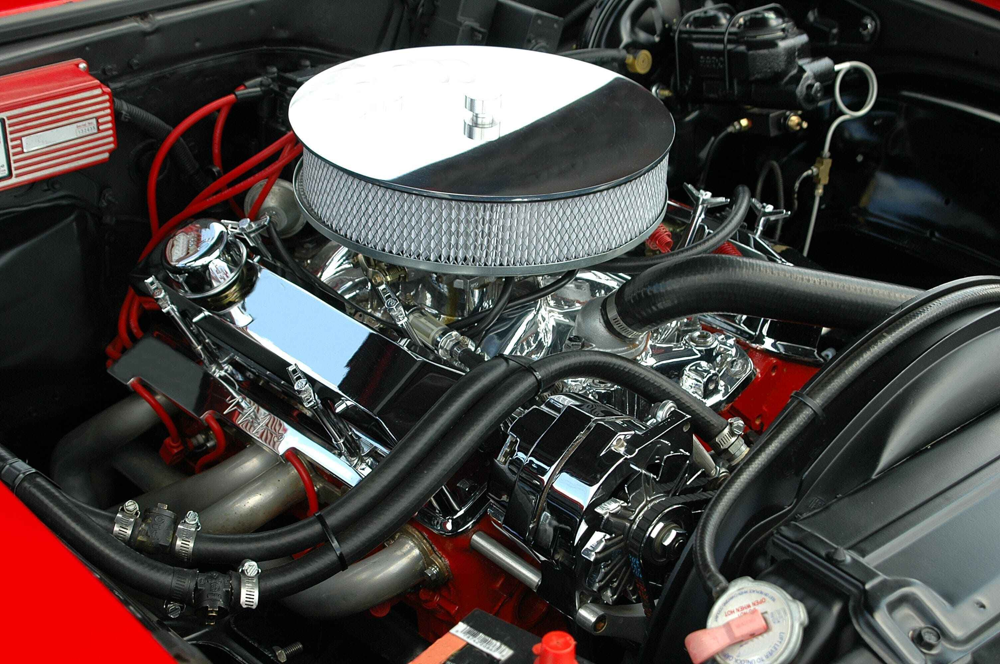

Home / Filters
Engine Air Filter: Dirty Symptoms and How to Change It
Quick answer
Replace the engine air filter at the interval in your service schedule, or sooner if it is visibly dirty or you drive on dusty roads. On most cars it's a ten-minute job: open the airbox, fit the new filter so it seals flat all the way round and close every clip. Don't blow a paper filter out with compressed air.

The engine air filter stops dust, sand and insects getting into the engine. Replacing it is a ten-minute job with no special tools on most cars.
Air filters can fool you. I've pulled out ones that looked fine from above and were packed with fine dust underneath, so I always hold the old filter up to the light before deciding. While the lid is off I also check the bottom of the airbox, because leaves and dirt collect there. With the new filter, what matters most is that it sits flat and seals all the way round, since even a small gap lets unfiltered air into the engine.
Signs it may need changing
- Visible dirt, leaves or debris on the filter
- It's past the interval in your service schedule
- A slightly sluggish feel or rougher idle in a car that has been neglected
- Black marks or dust inside the airbox
Honestly, on a modern fuel-injected car a dirty filter doesn't cause dramatic symptoms, because the engine management compensates. A new filter won't suddenly add power. Its job is protection, and it's cheap insurance.
Symptoms such as a rough idle have several possible causes. See Rough Idle: Causes and What to Check First before blaming the filter.
How often
Intervals range widely, often somewhere from 12,000 to 30,000 miles, so follow your manual. Dusty roads, farm areas and construction sites mean checking more often.
The quick visual check
- Open the airbox. It's the large black plastic box connected to the engine by a wide hose.
- Take the filter out and hold it up to a bright light.
- If you can't see light passing through, or it's packed with dirt, replace it.
How to change it
- Switch the engine off and let it cool.
- Release the clips or screws on the airbox lid.
- Lift the lid, being careful not to pull on any sensor wires that may be attached. Leave the airflow sensor alone.
- Note how the old filter sits, then lift it out.
- Wipe leaves and dirt out of the airbox. Don't let debris fall into the intake hose.
- Fit the new filter the same way round and check the rubber edge sits flat all the way round.
- Close the lid and secure every clip or screw.
Tip. If the new filter doesn't seat flush, don't force the lid. A gap lets unfiltered air in. Re-seat the filter or check it's the right part.
Paper, cotton or foam?
Standard paper filters are fine for nearly all drivers. Cotton gauze or washable filters can be reused but need proper cleaning and oiling, and too much oil can foul the airflow sensor. For a normal road car, paper is the simplest choice.
Don't blow it out with compressed air
You'll often hear that you can clean a paper filter by tapping it or using an air gun. A gentle tap to knock off loose dirt is fine, but strong compressed air can damage the paper. If it's properly dirty, replace it.
Since you're already under the bonnet, check the plugs too: How to Change Spark Plugs and How to Know It's Time. The cabin filter is a separate part; see Cabin Air Filter.
Common mistakes
- Leaving the lid unclipped or loosely seated
- Dropping debris into the intake
- Touching or damaging the airflow sensor
- Buying the wrong size filter
FAQ
How often should I change the engine air filter?
Follow your service schedule, often somewhere between 12,000 and 30,000 miles. Dusty conditions mean sooner.
Will a new air filter improve performance?
On a modern fuel-injected car, not noticeably. Its job is to protect the engine.
Can I clean a paper air filter?
A gentle tap to remove loose dirt is fine, but compressed air can damage the paper. Replace it if it's properly dirty.
What happens if I never change the air filter?
A badly clogged filter restricts airflow and can affect economy and idle, and a damaged or poorly sealed one lets dirt into the engine.
This guide is general information based on personal experience, not professional advice. Check your own vehicle's manual for exact specs and read the disclaimer before starting any job.